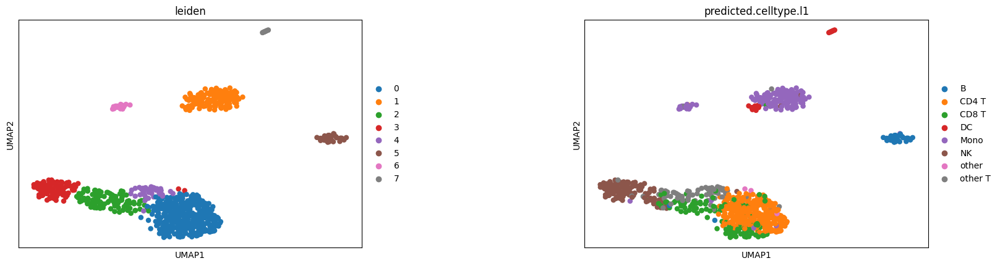

Run DOLPHIN Model on Full-length Dataset
The processed full-length human PBMC dataset can be downloaded from this link
[2]:
from DOLPHIN.model import run_DOLPHIN
import numpy as np
/mnt/md0/kailu/anaconda3/envs/DOLPHIN/lib/python3.10/site-packages/tqdm/auto.py:21: TqdmWarning: IProgress not found. Please update jupyter and ipywidgets. See https://ipywidgets.readthedocs.io/en/stable/user_install.html
from .autonotebook import tqdm as notebook_tqdm
[ ]:
#load datasets
graph_data = "fsla_Geometric.pt"
feature_data = "fsla_FeatureCompHvg.h5ad"
## save the output adata, default is set to the current folder
output_path = './'
[3]:
run_DOLPHIN("full-length", graph_data, feature_data, output_path, seed_num=11)
/mnt/md2/kailu/DOLPHIN/DOLPHIN/model/train.py:35: FutureWarning: You are using `torch.load` with `weights_only=False` (the current default value), which uses the default pickle module implicitly. It is possible to construct malicious pickle data which will execute arbitrary code during unpickling (See https://github.com/pytorch/pytorch/blob/main/SECURITY.md#untrusted-models for more details). In a future release, the default value for `weights_only` will be flipped to `True`. This limits the functions that could be executed during unpickling. Arbitrary objects will no longer be allowed to be loaded via this mode unless they are explicitly allowlisted by the user via `torch.serialization.add_safe_globals`. We recommend you start setting `weights_only=True` for any use case where you don't have full control of the loaded file. Please open an issue on GitHub for any issues related to this experimental feature.
pg_celldata = torch.load(in_path_gp)
[epoch 000] training loss: 243664.7809
[epoch 001] training loss: 193576.1476
[epoch 002] training loss: 183068.1789
[epoch 003] training loss: 177823.9712
[epoch 004] training loss: 173529.6577
[epoch 005] training loss: 169590.5415
[epoch 006] training loss: 165866.2245
[epoch 007] training loss: 162289.8803
[epoch 008] training loss: 158826.5395
[epoch 009] training loss: 155455.0555
[epoch 010] training loss: 152165.2624
[epoch 011] training loss: 148957.0916
[epoch 012] training loss: 145820.2222
[epoch 013] training loss: 142753.7103
[epoch 014] training loss: 139754.0775
[epoch 015] training loss: 136820.1651
[epoch 016] training loss: 133950.8750
[epoch 017] training loss: 131141.6466
[epoch 018] training loss: 128395.5124
[epoch 019] training loss: 125708.3282
[epoch 020] training loss: 123077.6377
[epoch 021] training loss: 120506.1991
[epoch 022] training loss: 117991.0672
[epoch 023] training loss: 115529.5657
[epoch 024] training loss: 113122.8745
[epoch 025] training loss: 110771.5388
[epoch 026] training loss: 108471.2159
[epoch 027] training loss: 106221.5872
[epoch 028] training loss: 104021.6459
[epoch 029] training loss: 101874.6072
[epoch 030] training loss: 99772.7877
[epoch 031] training loss: 97719.8972
[epoch 032] training loss: 95714.1342
[epoch 033] training loss: 93753.6657
[epoch 034] training loss: 91837.6514
[epoch 035] training loss: 89966.3275
[epoch 036] training loss: 88136.9004
[epoch 037] training loss: 86349.4349
[epoch 038] training loss: 84604.2869
[epoch 039] training loss: 82898.2661
[epoch 040] training loss: 81232.5529
[epoch 041] training loss: 79605.0845
[epoch 042] training loss: 78015.9731
[epoch 043] training loss: 76462.7769
[epoch 044] training loss: 74945.8569
[epoch 045] training loss: 73464.5495
[epoch 046] training loss: 72015.8358
[epoch 047] training loss: 70602.3083
[epoch 048] training loss: 69220.8454
[epoch 049] training loss: 67872.1293
[epoch 050] training loss: 66554.6291
[epoch 051] training loss: 65266.7434
[epoch 052] training loss: 64008.4915
[epoch 053] training loss: 62780.6539
[epoch 054] training loss: 61580.7670
[epoch 055] training loss: 60408.2321
[epoch 056] training loss: 59262.7599
[epoch 057] training loss: 58144.0222
[epoch 058] training loss: 57051.6700
[epoch 059] training loss: 55983.1584
[epoch 060] training loss: 54939.4275
[epoch 061] training loss: 53920.3877
[epoch 062] training loss: 52923.7511
[epoch 063] training loss: 51949.5477
[epoch 064] training loss: 50997.6908
[epoch 065] training loss: 50068.0442
[epoch 066] training loss: 49159.4381
[epoch 067] training loss: 48271.3684
[epoch 068] training loss: 47402.9629
[epoch 069] training loss: 46554.7487
[epoch 070] training loss: 45725.5267
[epoch 071] training loss: 44914.9065
[epoch 072] training loss: 44122.8304
[epoch 073] training loss: 43349.3747
[epoch 074] training loss: 42591.3081
[epoch 075] training loss: 41850.8742
[epoch 076] training loss: 41126.0092
[epoch 077] training loss: 40417.8072
[epoch 078] training loss: 39724.1052
[epoch 079] training loss: 39047.3688
[epoch 080] training loss: 38384.6552
[epoch 081] training loss: 37737.4336
[epoch 082] training loss: 37102.2993
[epoch 083] training loss: 36481.8064
[epoch 084] training loss: 35875.8708
[epoch 085] training loss: 35281.7710
[epoch 086] training loss: 34702.8045
[epoch 087] training loss: 34134.3218
[epoch 088] training loss: 33579.0951
[epoch 089] training loss: 33036.9488
[epoch 090] training loss: 32503.2776
[epoch 091] training loss: 31981.9040
[epoch 092] training loss: 31471.2665
[epoch 093] training loss: 30972.7557
[epoch 094] training loss: 30483.2329
[epoch 095] training loss: 30004.9475
[epoch 096] training loss: 29536.7854
[epoch 097] training loss: 29078.6846
[epoch 098] training loss: 28629.6454
[epoch 099] training loss: 28190.1657
[epoch 100] training loss: 27761.9285
[epoch 101] training loss: 27342.4036
[epoch 102] training loss: 26927.8125
[epoch 103] training loss: 26523.4702
[epoch 104] training loss: 26126.8037
[epoch 105] training loss: 25739.5380
[epoch 106] training loss: 25359.4311
[epoch 107] training loss: 24988.5262
[epoch 108] training loss: 24623.5034
[epoch 109] training loss: 24265.5814
[epoch 110] training loss: 23915.9552
[epoch 111] training loss: 23571.1140
[epoch 112] training loss: 23236.3481
[epoch 113] training loss: 22907.5403
[epoch 114] training loss: 22583.7561
[epoch 115] training loss: 22266.4170
[epoch 116] training loss: 21955.8116
[epoch 117] training loss: 21653.0890
[epoch 118] training loss: 21355.2765
[epoch 119] training loss: 21063.5031
[epoch 120] training loss: 20777.6584
[epoch 121] training loss: 20494.9528
[epoch 122] training loss: 20220.3241
[epoch 123] training loss: 19949.5874
[epoch 124] training loss: 19685.9230
[epoch 125] training loss: 19426.1909
[epoch 126] training loss: 19171.5292
[epoch 127] training loss: 18921.3619
[epoch 128] training loss: 18677.8733
[epoch 129] training loss: 18438.9748
[epoch 130] training loss: 18203.1131
[epoch 131] training loss: 17972.0053
[epoch 132] training loss: 17746.3087
[epoch 133] training loss: 17525.0124
[epoch 134] training loss: 17305.2934
[epoch 135] training loss: 17092.5511
[epoch 136] training loss: 16882.9240
[epoch 137] training loss: 16676.8641
[epoch 138] training loss: 16474.9341
[epoch 139] training loss: 16276.4748
[epoch 140] training loss: 16082.1129
[epoch 141] training loss: 15891.5012
[epoch 142] training loss: 15703.6361
[epoch 143] training loss: 15519.2370
[epoch 144] training loss: 15339.8857
[epoch 145] training loss: 15164.2684
[epoch 146] training loss: 14988.6335
[epoch 147] training loss: 14817.3861
[epoch 148] training loss: 14650.5068
[epoch 149] training loss: 14503.1708
[epoch 150] training loss: 14337.6277
[epoch 151] training loss: 14174.6211
[epoch 152] training loss: 14016.1644
[epoch 153] training loss: 13861.4158
[epoch 154] training loss: 13710.1173
[epoch 155] training loss: 13563.0723
[epoch 156] training loss: 13418.7632
[epoch 157] training loss: 13276.6898
[epoch 158] training loss: 13137.0246
[epoch 159] training loss: 13000.0937
[epoch 160] training loss: 12864.8395
[epoch 161] training loss: 12731.8535
[epoch 162] training loss: 12602.9918
[epoch 163] training loss: 12475.6962
[epoch 164] training loss: 12350.6650
[epoch 165] training loss: 12228.0789
[epoch 166] training loss: 12107.2485
[epoch 167] training loss: 11989.3485
[epoch 168] training loss: 11873.7139
[epoch 169] training loss: 11760.4716
[epoch 170] training loss: 11646.1021
[epoch 171] training loss: 11536.0823
[epoch 172] training loss: 11430.3383
[epoch 173] training loss: 11324.1356
[epoch 174] training loss: 11217.4272
[epoch 175] training loss: 11115.0607
[epoch 176] training loss: 11016.2439
[epoch 177] training loss: 10917.6308
[epoch 178] training loss: 10818.2257
[epoch 179] training loss: 10722.3327
[epoch 180] training loss: 10628.5501
[epoch 181] training loss: 10535.6122
[epoch 182] training loss: 10446.3344
[epoch 183] training loss: 10357.5469
[epoch 184] training loss: 10268.8737
[epoch 185] training loss: 10185.5327
[epoch 186] training loss: 10098.9644
[epoch 187] training loss: 10015.1413
[epoch 188] training loss: 9932.8176
[epoch 189] training loss: 9853.2093
[epoch 190] training loss: 9773.8692
[epoch 191] training loss: 9696.6192
[epoch 192] training loss: 9619.7378
[epoch 193] training loss: 9543.8816
[epoch 194] training loss: 9471.0236
[epoch 195] training loss: 9398.1895
[epoch 196] training loss: 9327.9709
[epoch 197] training loss: 9256.8217
[epoch 198] training loss: 9188.6437
[epoch 199] training loss: 9120.9490
[19]:
import scanpy as sc
from sklearn.metrics import adjusted_rand_score
The result is saved at this link
[20]:
adata = sc.read_h5ad("./DOLPHIN_Z.h5ad")
[21]:
sc.pp.neighbors(adata, use_rep="X_z")
sc.tl.umap(adata)
sc.tl.leiden(adata, 0.7, random_state=0)
print(len(set(adata.obs["leiden"])))
adjusted_rand_score(adata.obs["predicted.celltype.l1"], adata.obs["leiden"])
8
[21]:
0.6339526635092507
[22]:
sc.pl.umap(adata, color=['leiden', "predicted.celltype.l1"], wspace=0.5)
